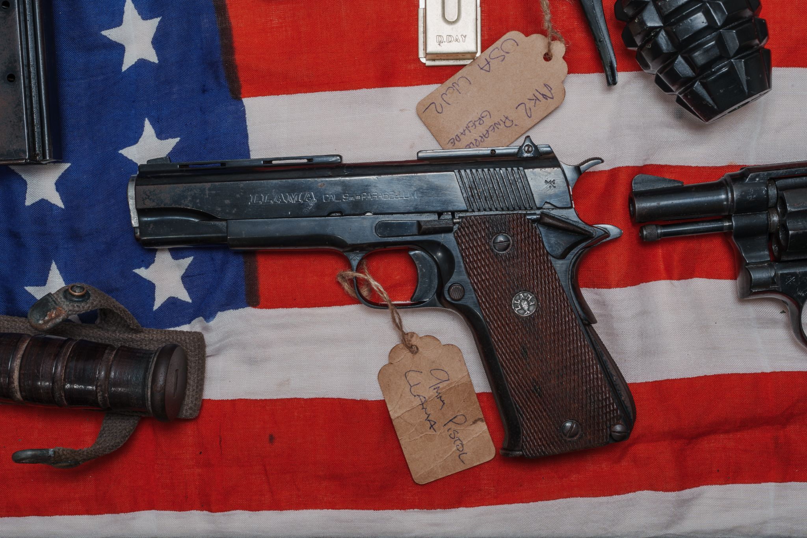
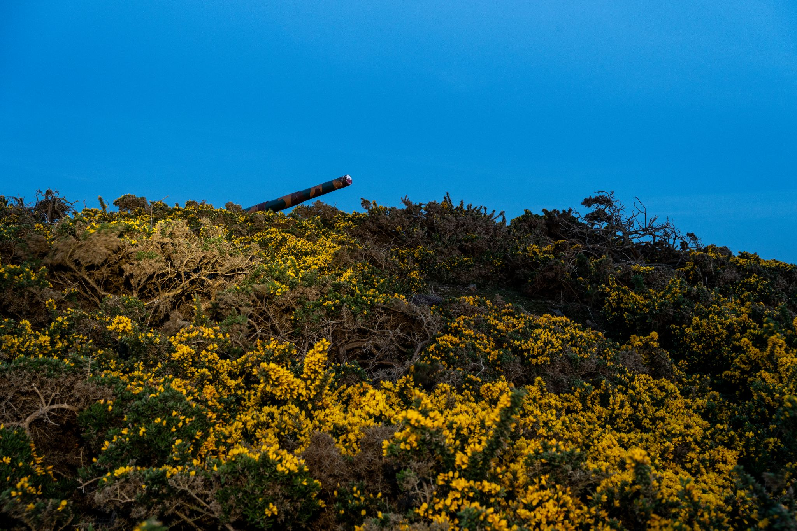
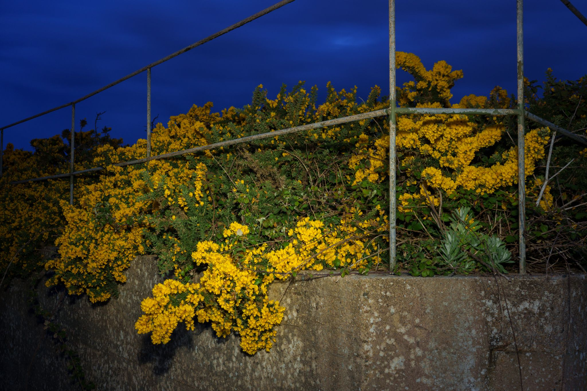
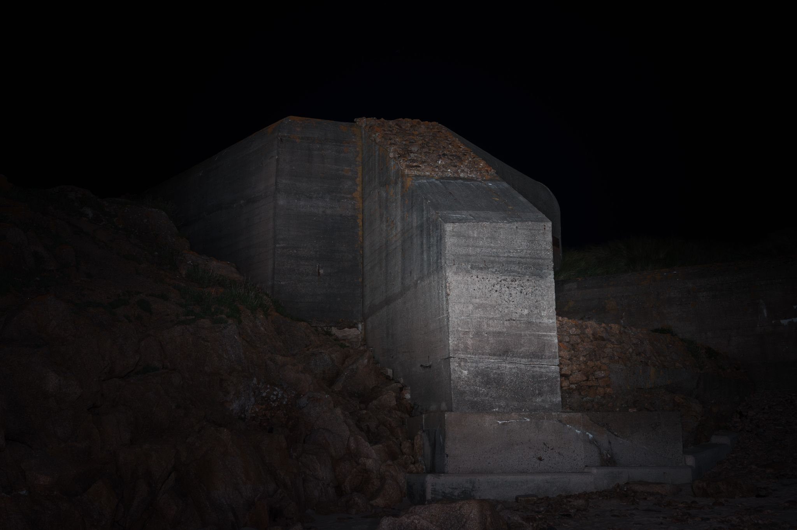
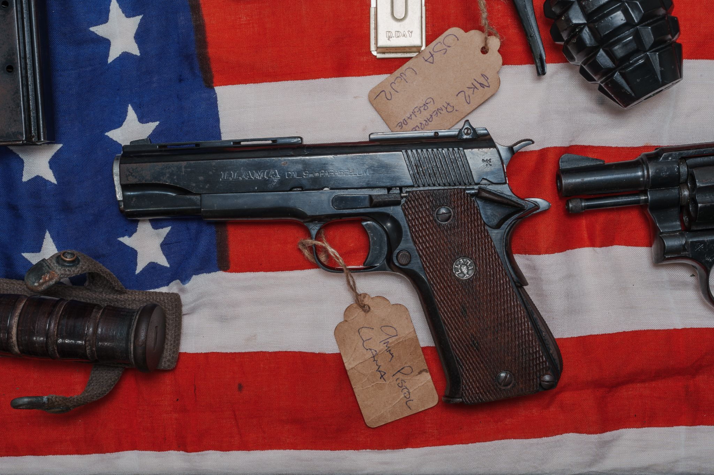
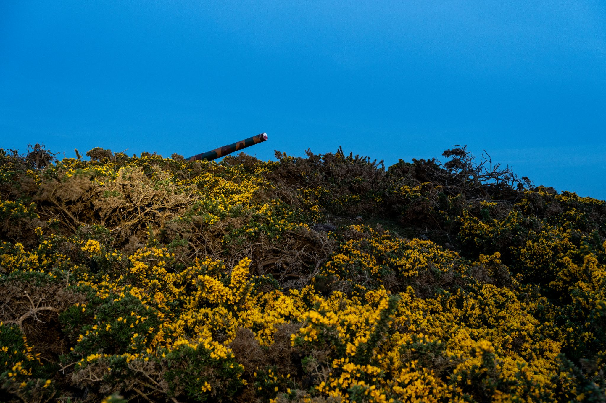
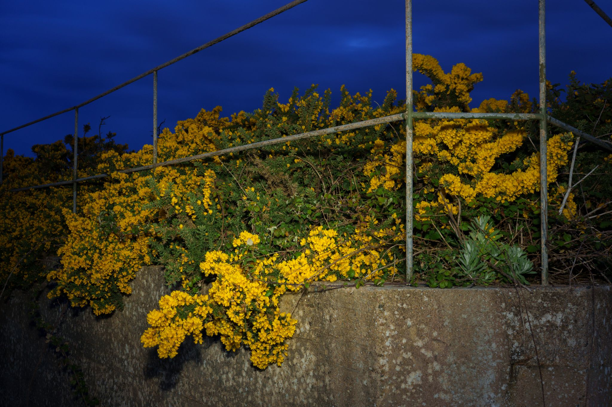
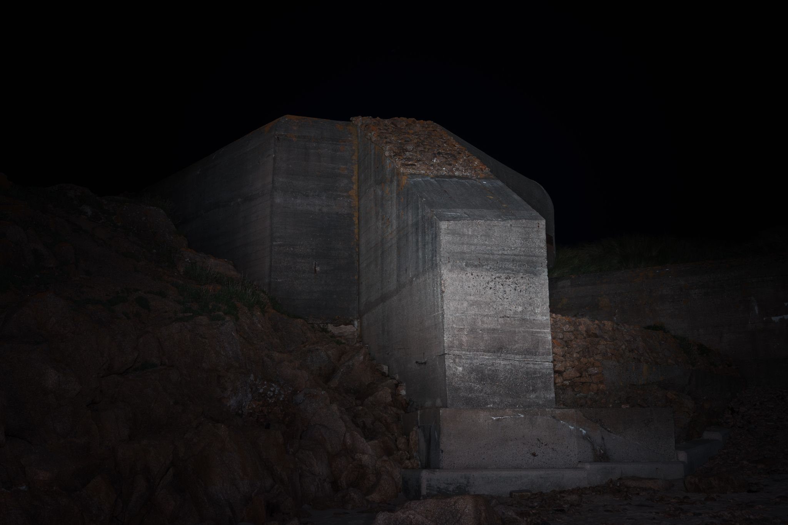
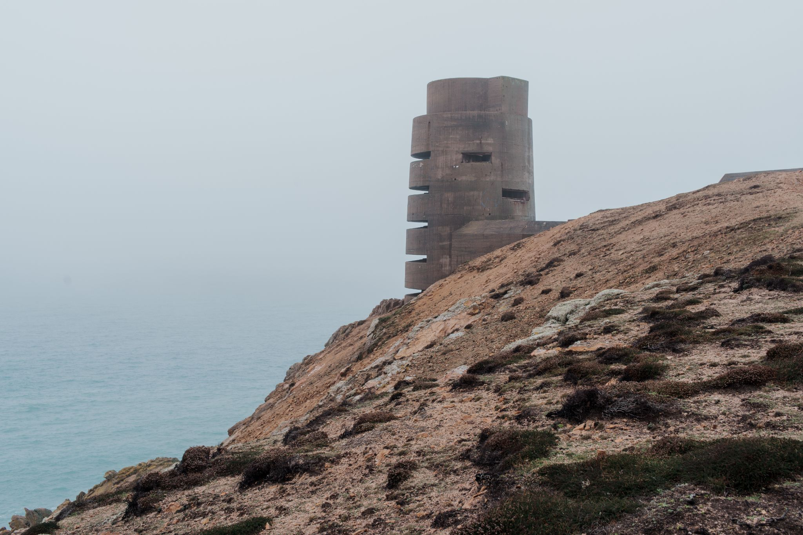
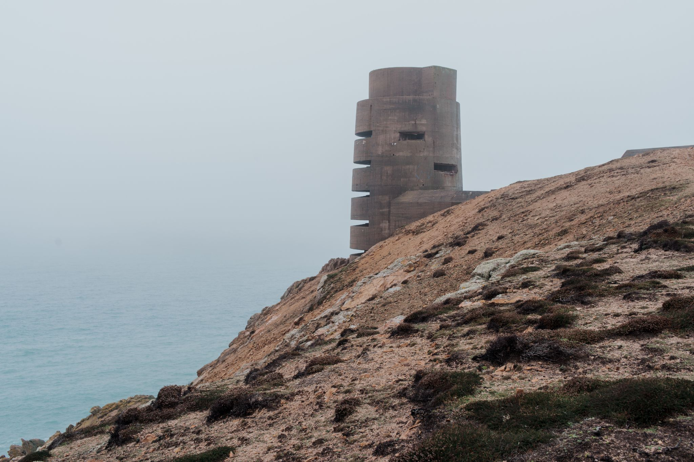

 



In Plain Sight
More than 80 years after the Channel Islands were liberated from German occupation, hundreds of concrete bunkers, tunnels and other fortifications still punctuate the landscape. In Plain Sight is an ongoing project that explores the enduring presence of these structures and the islanders who now use, restore and preserve them.